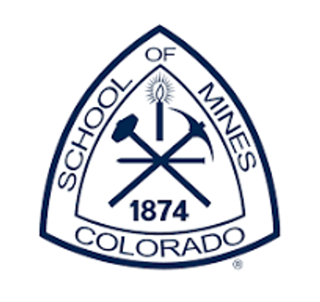
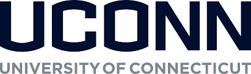
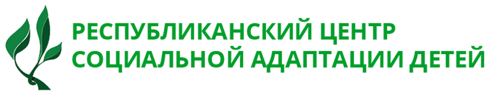

01
Education & Workforce
Modern skills, professional pathways, autism diagnostics training, and institution-building with universities and technical partners.

Vatandosh Connect builds partnerships between international institutions, diaspora professionals, and local communities to support education, social protection, public policy, and sustainable development.
Our role is to identify urgent needs, connect the right institutions, and help local partners implement solutions that can survive beyond a single grant cycle.
Modern skills, professional pathways, autism diagnostics training, and institution-building with universities and technical partners.
Community-driven work on poverty reduction, domestic violence prevention, children's rights, and support for vulnerable families.
Fiscal transparency, diaspora engagement, research collaboration, and strategic initiatives that connect Uzbekistan with global expertise.
If the header navigation is hard to reach in a narrow browser, these links provide a clear page directory.
Each project is designed with local context, practical implementation, and institutional credibility in mind.
Developing American-model engineering education in collaboration with the Colorado School of Mines.
Read more
A partnership with UConn and the U.S. Treasury Department to strengthen public budget transparency.
Read moreDomestic violence prevention, poverty reduction, children's rights, and early autism detection support.
Read moreThese logos are now stored locally in the draft so the new site preserves the existing institutional credibility signals.



For Google for Nonprofits and Google Ad Grants, the site needs a clear mission, transparent nonprofit status, useful public content, working navigation, and no placeholder language. The site is structured around those requirements.
Your Substack becomes the intellectual home for policy notes, field reflections, diaspora interviews, and explainers on Uzbekistan's development priorities. The website now points readers directly to your publication while keeping project updates on-site.
Read on SubstackA new strategic platform for research, convening, and public education around the Middle Corridor linking Central Asia, the Caspian region, the South Caucasus, Turkey, and Europe.
Open Project PageThe professional version of the site should make it easy to understand legal status, priority areas, partners, impact, and the next concrete action a visitor can take.
"Vatandosh Connect has made a tremendous difference in the lives of Uzbek communities. Their dedication and commitment are truly inspiring."